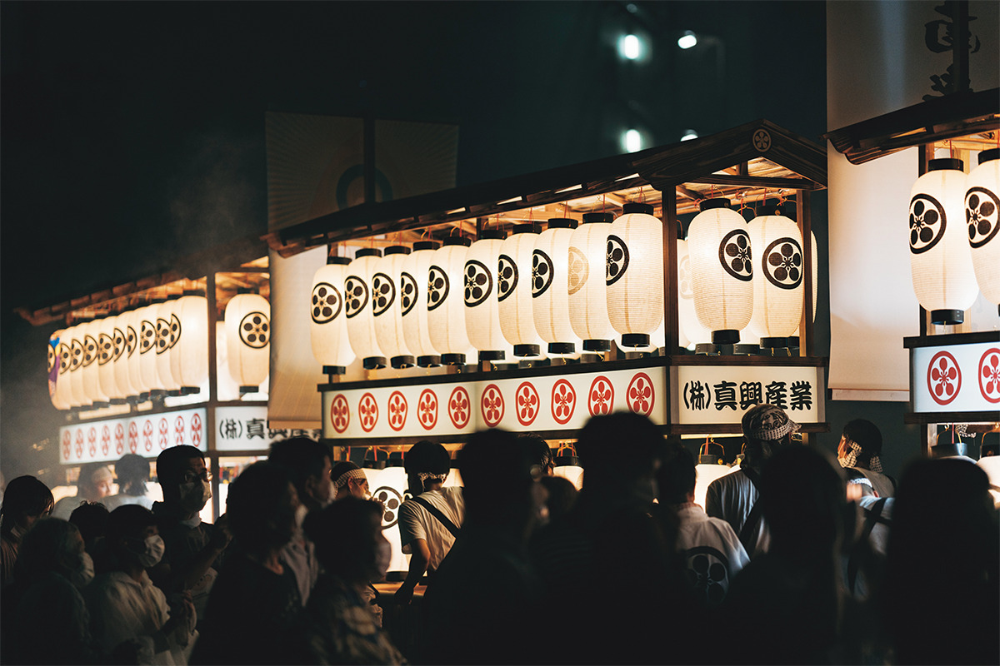
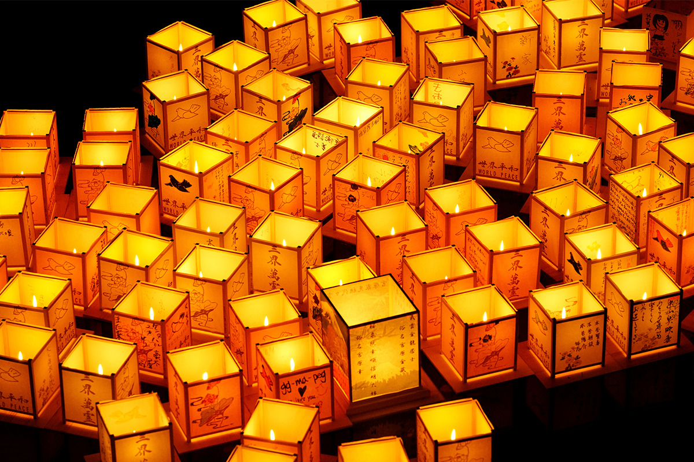
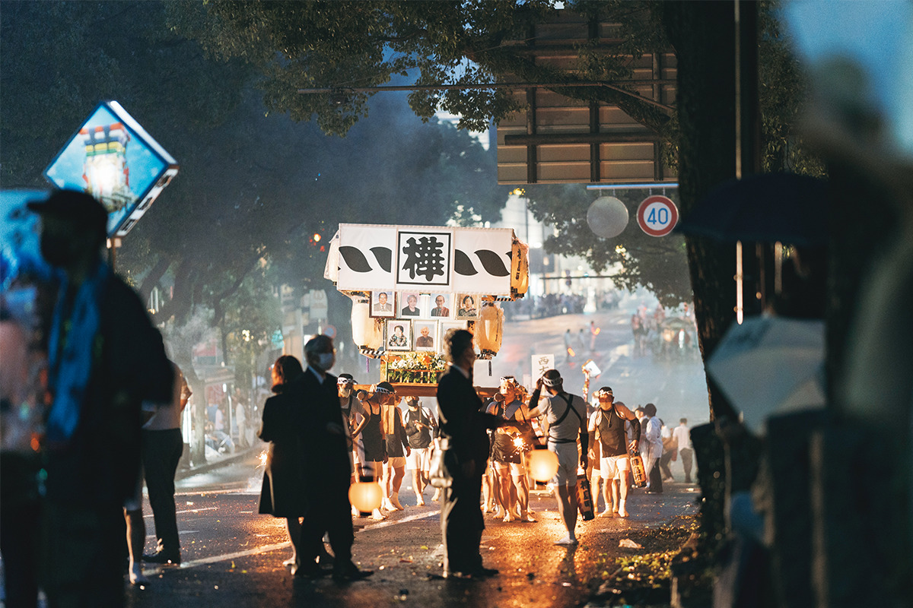
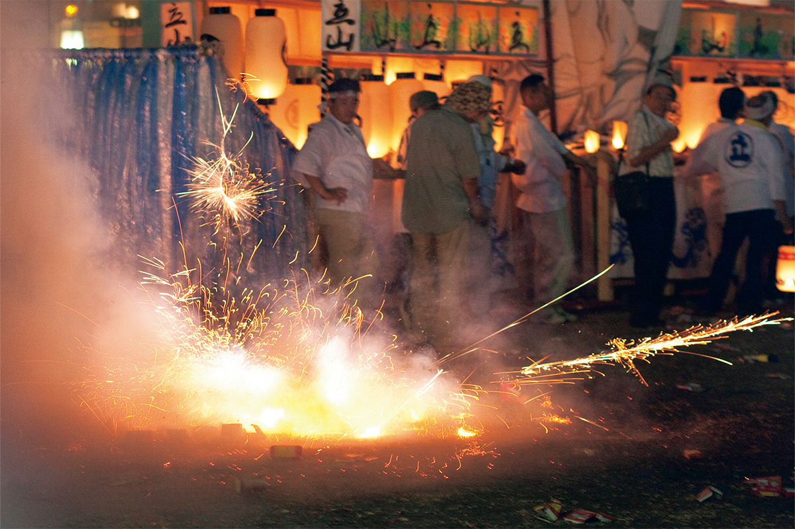

Префектура Нагасаки · Нагасаки · праздники
Сёро-нагаси в Нагасаки: самодельные лодки и петарды в ночь проводов душ

Летом, в праздник поминовения Обон, по всей Японии провожают души умерших тихо, со свечами и молитвами. В Нагасаки делают наоборот: 15 августа город тонет в звоне гонгов, грохоте петард и дыму.
Обычай
Проводить шумно
15 августа по всей стране проходят обряды Обона, но сёро-нагаси в Нагасаки не похож ни на один из них. Семьи, у которых за последний год кто-то умер и которые встречают его первый Обон, своими руками строят «сёро-бунэ», лодку для души. На ней покойного провожают, чтобы он благополучно добрался до буддийского рая, Чистой земли. На носу лодки пишут герб и имя семьи или название городского квартала.

Главное в этом обряде звук. Лодки тянут по улицам, и вокруг без остановки бьют в гонги и взрывают петарды. Другого такого шумного поминального обряда в Японии не найти. За этим шумом стоит простое желание: проводить близкого человека в последний путь не в тишине, а с размахом.
Лодки
У каждой своя история
Лодки здесь называют просто «фунэ», и в них часто видна жизнь того, кого провожают. Встречаются лодки с героями аниме, а для любителя гольфа лодку могут сделать в виде поля для гольфа. По словам исследователя японских праздников, глядя на них, понимаешь, каким был человек и что чувствуют его родные, и от этого сжимается сердце.

Петарды
Половина петард страны
Символ сёро-нагаси это оглушительный треск петард. По потреблению петард префектура Нагасаки на первом месте в Японии: на неё приходится половина всего, что взрывают в стране. Сама мысль, что грохот петард отгоняет злых духов, пришла из Китая.

Если идёте смотреть сёро-нагаси, не забудьте беруши.
Сёро-нагаси
- Даты
- ежегодно 15 августа (в 2026 году суббота, 15 августа)
- Адрес
- префектура Нагасаки, Нагасаки, центральные районы города
- Как добраться
- около 10 минут пешком от станции JR Нагасаки